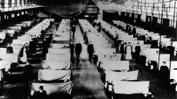

Short Articles
*Click on the aritcle to read

Liu Zhiming is the eighth frontline health-care worker to die from COVID-19, and hundreds more have been infected.
Neurosurgeon Liu Zhiming, who served as the director of Wuchang Hospital in Wuhan, died from COVID-19 earlier today (February 18) at age 51, China Daily reports. The hospital is one of seven within the region specified to treat patients infected with SARS-CoV-2 and Liu had been caring for them since the beginning of the outbreak in December.
“Unfortunately he became infected and passed away at 10:54 Tuesday morning after all-out efforts to save him failed,” the Wuhan Municipal Health Commission explains in a statement, according to news reports. Liu made “important contributions in the work of fighting and controlling” the virus
“There are risks—there simply aren’t enough resources,” Yu Yajie, an administrator at Wuhan Central Hospital, tells The New York Times. Yu, who is currently bedridden after becoming infected, has said that a lack of supplies has forced workers to reuse single-use items, make repairs to masks and goggles using tape, and even don plastic bags in lieu of proper foot coverings.
~lisa writer
connect with her on twitter lisa831
Like the flu, COVID-19 is spread primarily via respiratory droplets—little blobs of liquid released as someone coughs, sneezes, or talks. Viruses contained in these droplets can infect other people via the eyes, nose, or mouth—either when they land directly on somebody’s face or when they’re transferred there by people touching their face with contaminated hands..
Because respiratory droplets are too heavy to remain suspended in the air, direct person-to-person transmission normally only happens when people are in close contact—within about six feet of each other, according to the US Centers for Disease Control and Prevention (CDC). It could also occur in a medical setting, if someone has to handle respiratory secretions such as saliva or mucus from an infected person.
A handful of genetic and structural analyses have identified a key feature of the virus — a protein on its surface — that might explain why it infects human cells so readily.
The new virus spreads much more readily than the one that caused severe acute respiratory syndrome, or SARS (also a coronavirus), and has infected more than ten times the number of people who contracted SARS.
To infect a cell, coronaviruses use a ‘spike’ protein that binds to the cell membrane, a process that's activated by specific cell enzymes. Genomic analyses of the new coronavirus have revealed that its spike protein differs from those of close relatives, and suggest that the protein has a site on it which is activated by a host-cell enzyme called furin.
This is significant because furin is found in lots of human tissues, including the lungs, liver and small intestines, which means that the virus has the potential to attack multiple organs.
~WebMd
The "Spanish" influenza pandemic of 1918–1919, which caused ≈50 million deaths worldwide.
Many questions about its origins, its unusual epidemiologic features, and the basis of its pathogenicity remain unanswered. The public health implications of the pandemic therefore remain in doubt
An estimated one third of the world's population (or ≈500 million persons) were infected and had clinically apparent illnesses (1,2) during the 1918–1919 influenza pandemic. The disease was exceptionally severe. Case-fatality rates were >2.5%, compared to ( 0.1% in other influenza pandemics (3,4). Total deaths were estimated at ≈50 million (5–7) and were arguably as high as 100 million
In 1918, the cause of human influenza and its links to avian and swine influenza were unknown. Despite clinical and epidemiologic similarities to influenza pandemics of 1889, 1847, and even earlier, many questioned whether such an explosively fatal disease could be influenza at all
By the early 1990s, 75 years of research had failed to answer a most basic question about the 1918 pandemic: why was it so fatal? No virus from 1918 had been isolated, but all of its apparent descendants caused substantially milder human disease. Moreover, examination of mortality data from the 1920s suggests that within a few years after 1918, influenza epidemics had settled into a pattern of annual epidemicity associated with strain drifting and substantially lowered death rates.
~NCBI

About

This website is created to provide the content related to the current empidemic through which whole world is suffering.
the source of information is various other websites and news media.
~ARNAV PANDEY